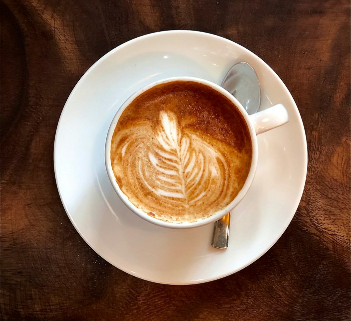
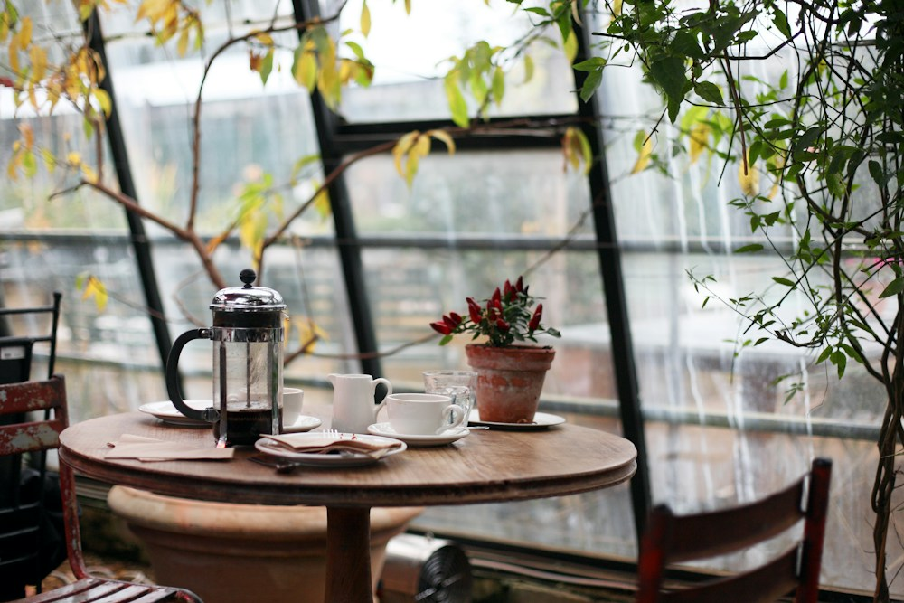
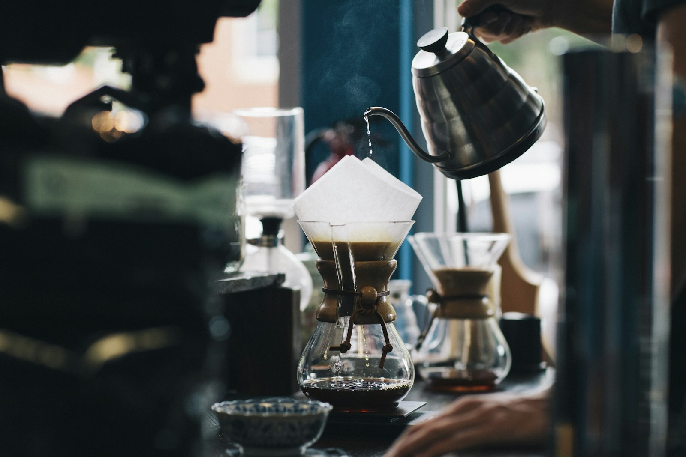

ЛЮБИМЧИККапучино «Котик»
250 ₽Бархатная пенка, двойной эспрессо
и идеальный баланс.
Учебный концепт кофейни. Цены, акции и адрес приведены для примера.
К содержимому✳ КОФЕ. УЮТ. МУР-МУР.
И с чашки любимого кофе. Готовим с заботой,
встречаем с теплом и никуда не торопим.


здесь можно замедлиться ↗01 / НЕМНОГО О НАС
«Кофейный котик» начался с простой мечты: создать место, где вместе с кофе можно получить немного тепла. Не только в чашке.
Так появилась наша маленькая кофейня — с ароматом свежего зерна, любимыми пластинками и столиком у окна. Здесь встречаются друзья, рождаются идеи и случаются приятные паузы.
Мы верим: хороший кофе не требует особого повода.
Как и забота друг о друге.
Фотографии иллюстративные. Состав указан для учебного меню; при аллергии уточняйте ингредиенты и возможные следы аллергенов у бариста.
МИНИ-ГИД ДЛЯ ГОСТЯ
Выберите ритм своей кофейной паузы.
Фотографии иллюстрируют атмосферу учебного проекта.

Любите чистый вкус зерна? Узнайте у бариста о способе заваривания и степени обжарки. Фильтр и эспрессо раскрывают кофе по-разному.

Книга, разговор или несколько спокойных минут у окна. Дайте напитку немного остыть, чтобы почувствовать больше оттенков вкуса.

В тёплый день хочется прохлады. Спросите о холодной версии напитка; лёд, молоко и сироп меняют и вкус, и насыщенность чашки.
03 / МАЛЕНЬКИЕ ПРИЯТНОСТИ
Скидка на любой кофе по будням
с 08:00 до 11:00. Для ранних котиков.
Два капучино по цене одного
каждую среду с 16:00 до 19:00.
Любимый напиток за наш счёт
в день рождения при покупке десерта.
04 / ДЛЯ ТЕХ, КТО С НАМИ
У котиков всё просто: чем чаще встречаемся,
тем больше приятных моментов.
Бесплатно, без анкет и лишних вопросов.
Один напиток по полной цене — одна отметка.
Пять лапок собраны? Выбирай кофе до 350 ₽.
ХОРОШЕГО КОФЕ МНОГО НЕ БЫВАЕТ.
05 / УВИДИМСЯ ЗА ЧАШКОЙ
Заглядывай за кофе, разговором
или просто так. Тебе здесь рады.
Москва, ул. Примерная, 12
Адрес для демонстрации макетаПн–Пт: 08:00–21:00
Сб–Вс: 09:00–22:00